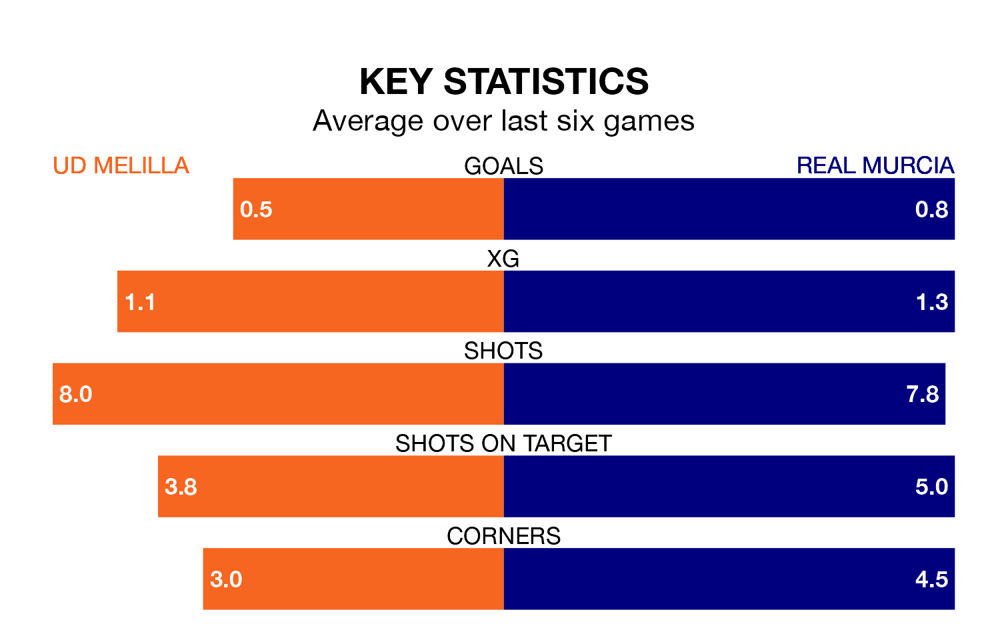

Struggling UD Melilla face Real Murcia at the Estadio Álvarez Claro on Sunday looking to build on a win in their last league outing.
After securing all three points with a 1-0 victory over Granada B on January 4, Melilla sit 19th in Primera Division RFEF Group 2.
They travel to play a Murcia side 11th in the standings, who were held in their last match, 1-1 against Atlético Madrid B, on January 2.
In the last 10 years, Melilla and Murcia have played each other on 10 occasions. Melilla won one of them, Murcia three, and they drew six times.
On average, Melilla scored 0.5 goals and Murcia 0.9 in those matches.
Their last meeting was on April 24 2022, when they played out a 2-2 draw.
In Daniel García Beltrán, Melilla have one of the league's most on-form strikers so far this season. He has notched one goal in one appearance, to sit third in the scoring charts.
Murcia's top scorers, with one goal in one game each, are, Ángel Montoro Sánchez and Rodrigo Ríos Lozano.
The hosts are in disappointing form in Primera Division RFEF Group 2, with two wins and four losses from their last six games.
With a win and two draws over that period, the away side's form is slightly worse – they have taken five points from 18, compared to Melilla's six.
With 10 goals in 18 games so far this season, Melilla are the league's lowest scorers with 0.6 goals per game. And they are conceding more than average, letting in 27 goals at a rate of 1.5 per game.
Murcia are also below average scorers, with 0.9 goals per game, compared to a league average of 1.2. They have conceded 1.2 goals per game.
Updated: 10:50, 10/01/24